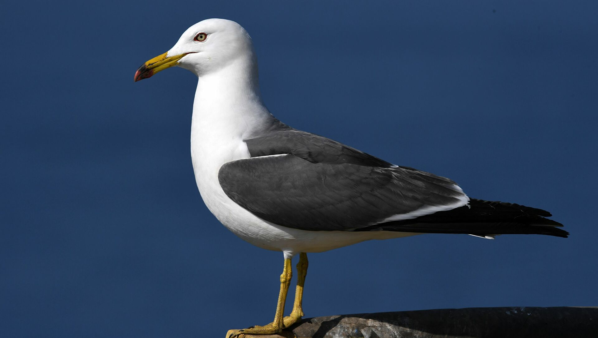
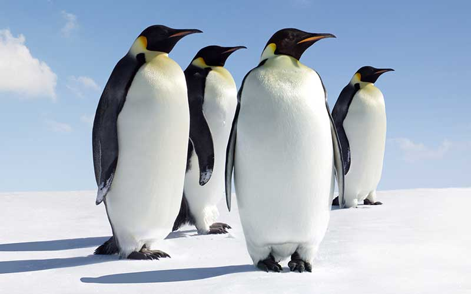
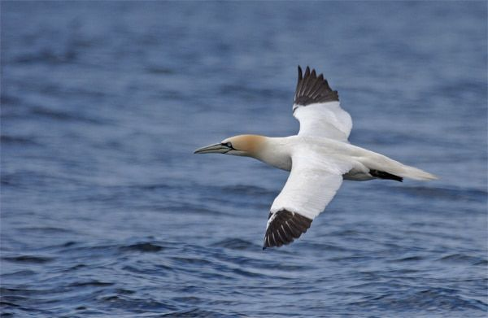
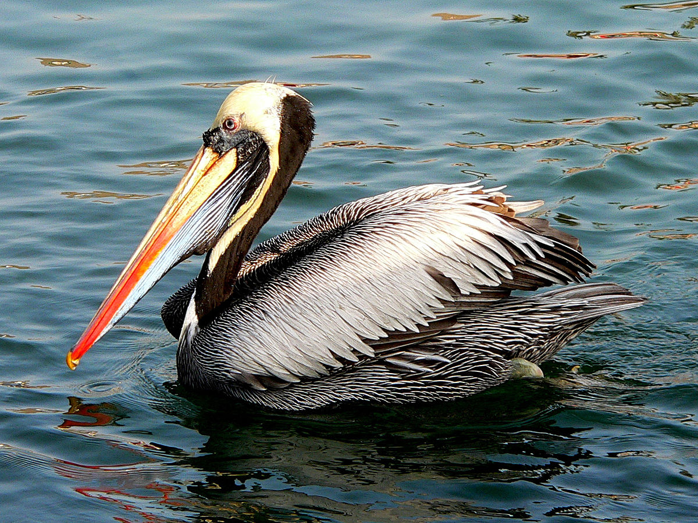

Aves Marinas
Los láridos son aves de gran tamaño que pueden medir hasta 76 centímetros de altura. Cuentan con un plumaje blanco, negro y gris y algunos tonos más llamativos en las patas y picos, que son bastante largos. Se alimentan de casi cualquier cosa, ya que son omnívoras, y su dieta se compone de animales marinos, carroña, vegetales, insectos, huevos de pájaro, ratas, etc.
Es una de las especies de aves marinas más famosas y endémicas de la Antártida. Ya que puede medir 1,2 metros y pesar 45 kilos, es considerado el más grande de todos los pinguinos. Este presenta espalda, cabeza y alas negras, mientras que su vientre es blanco con marcas amarillas.
Su nombre científico es morus bassanus y vive en colonias, que pueden estar compuestas de hasta 35 000 parejas, tanto en el Mediterráneo como en el Atlántico Norte. No pasa mucho tiempo en tierra, solo el suficiente para anidar y cuidar de sus crías, pues el resto lo dedica a volar y cazar su alimento.
La última de las especies de aves marinas de este listado es conocida por su largo pico, que contiene un saco gular con el cual captura las presas como si fuese una gran cuchara. Asimismo, su plumaje es blanco y tiene patas palmeadas para nadar mejor.
